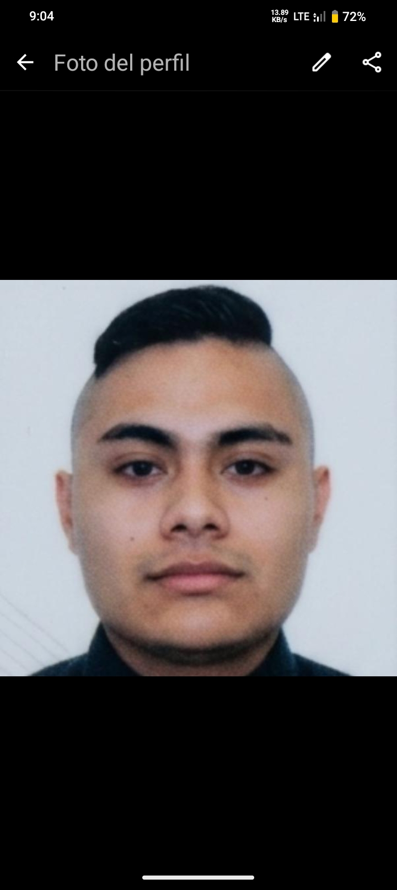
SOY PROGRAMADOR WEB PROFESIONAL
FUNDADOR DE TITANES - DEL LODO AL ORO DIGITAL
Soy profesional principalmente en el mundo de la programación web.
No uso plantillas, hago código limpio desde el celular en Acode.
Mi especialidad: HTML, CSS, diseño mobile first, copywriting de venta.
Mi sello: negro y dorado, historia real, botones blancos con borde oro.
He creado más de 50 páginas webs sin pagar hosting, solo GitHub Pages y Netlify.
Mi marca personal es TITANES porque yo fui forjado como titán desde niño.
Soy profesional principalmente en el mundo de la programación web.
No uso plantillas, hago código limpio desde el celular en Acode.
Mi especialidad: HTML, CSS, diseño mobile first, copywriting de venta.
Mi sello: negro y dorado, historia real, botones blancos con borde oro.
He creado más de 50 páginas webs sin pagar hosting, solo GitHub Pages y Netlify.
Mi marca personal es TITANES porque yo fui forjado como titán desde niño.
ETAPA 1: 2019-2020 - LA IDEA EN LIBRETA - EL LODO
En 2019 no tenía ni celular bueno. Mi marca era solo una idea escrita en libreta con pluma Bic. Escribí TITANES con letras grandes y un casco espartano mal dibujado. No tenía logo, no tenía colores, solo hambre. Mi primera página web fue un intento fallido con fondo blanco y letras negras, se veía fea pero funcionaba. Aprendí HTML viendo videos a las 2am con datos regalados. Esta etapa fue puro lodo, pura prueba y error, 100 intentos fallidos.
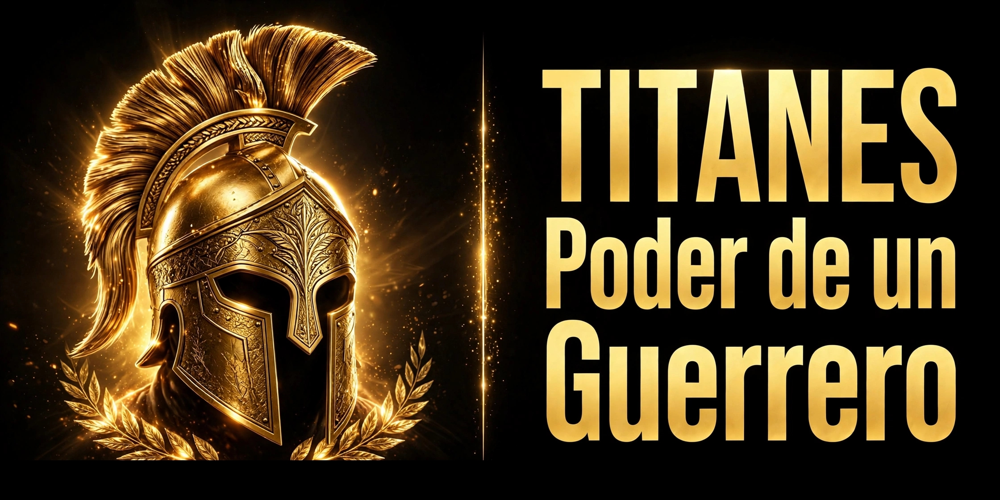
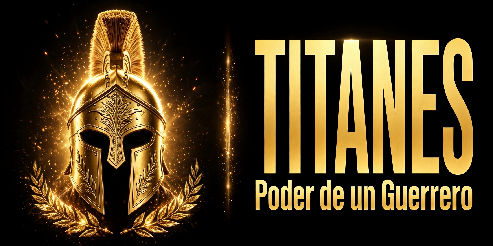
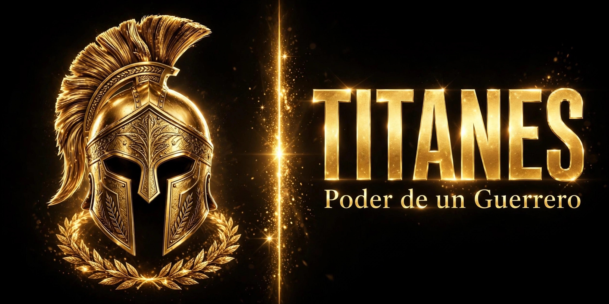
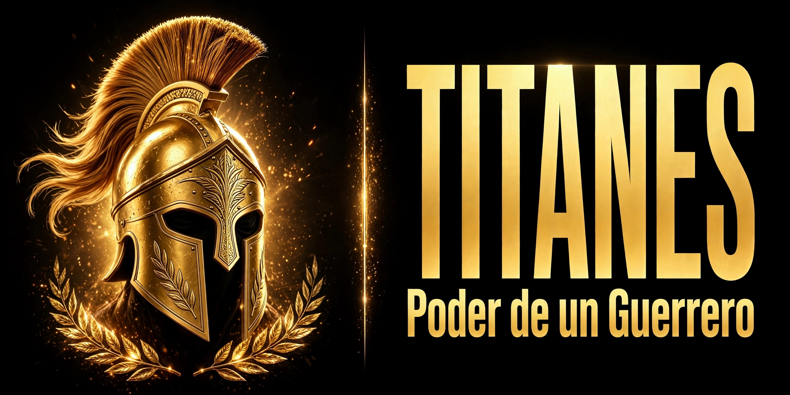
Otras marcas en esta etapa: Nike empezó en la cajuela de un carro, Apple en un garage. Yo empecé en una libreta de $10. Misma historia de lodo, diferente época.
ETAPA 2: 2021-2022 - PRIMER LOGO Y COLORES - FORJA
Aquí definí mis colores: negro y dorado. Negro porque es elegante, impone y no se ve la suciedad del trabajo. Dorado porque es el oro que forjé. Hice mi primer logo en PicsArt en celular, un casco espartano dorado con fondo negro. Empecé a usar botones blancos con borde dorado y sombra, que hoy es mi sello personal que nadie más tiene. Mi web ya tenía 3 productos y botón de WhatsApp real. Vendí mi primera playera de $350 y supe que esto sí iba a funcionar.
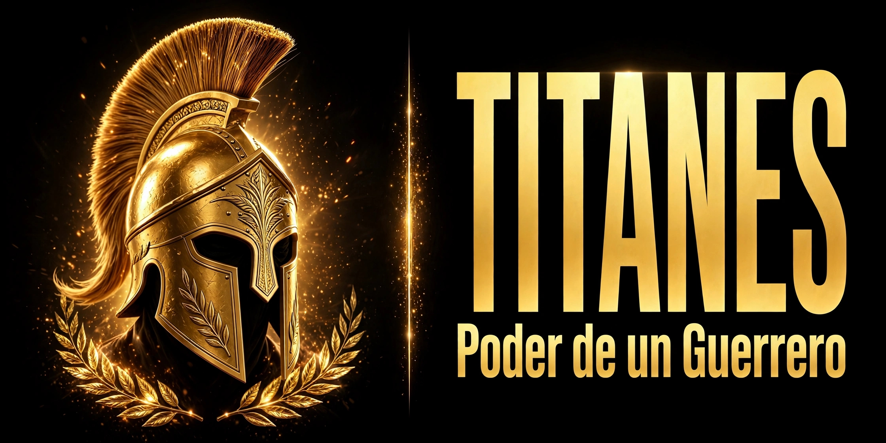
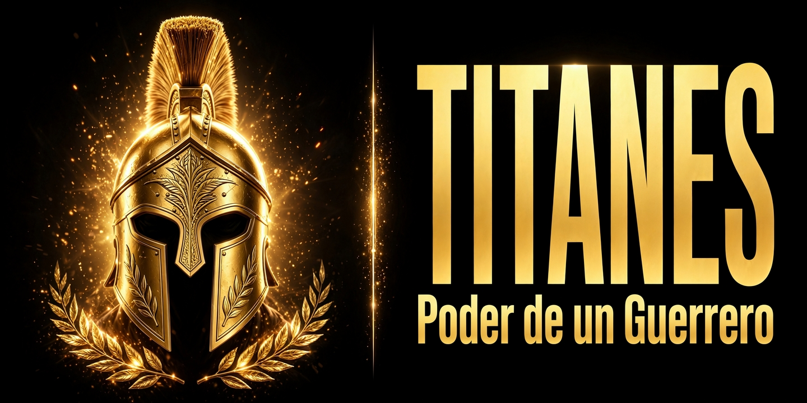
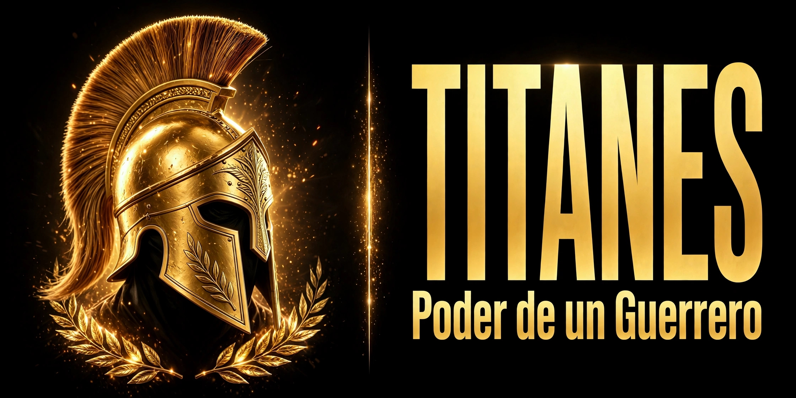
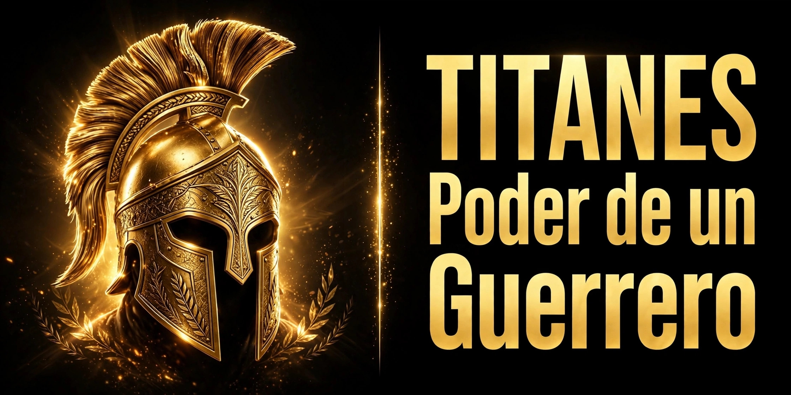
Comparativa con otras marcas: Adidas en esta etapa cambió de 3 rayas a logo trébol. Yo cambié de fondo blanco a negro total con dorado. Evolución de identidad.
ETAPA 3: 2023-2024 - MARCA CON HISTORIA - GUERRERO
Aquí entendí que una marca sin historia no vende. Metí mi historia del último banco a mi web. Creé saga espartana, camino del guerrero, capítulos que hacen que el cliente dure 4 minutos leyendo. Mi programación web subió de nivel: ya hacía responsive design, mi web se veía bien en celular que es donde el 90% compra. Implementé mi método de historia + producto + botón blanco. Mi marca ya no era solo ropa, era movimiento de Titanes que se hacen desde cero.
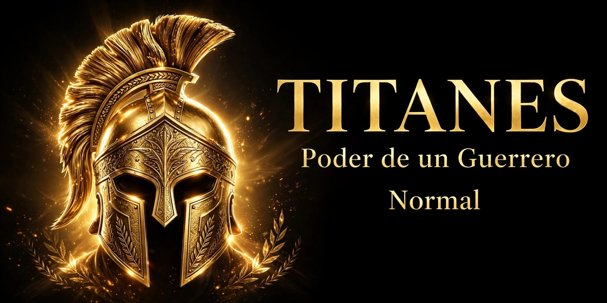
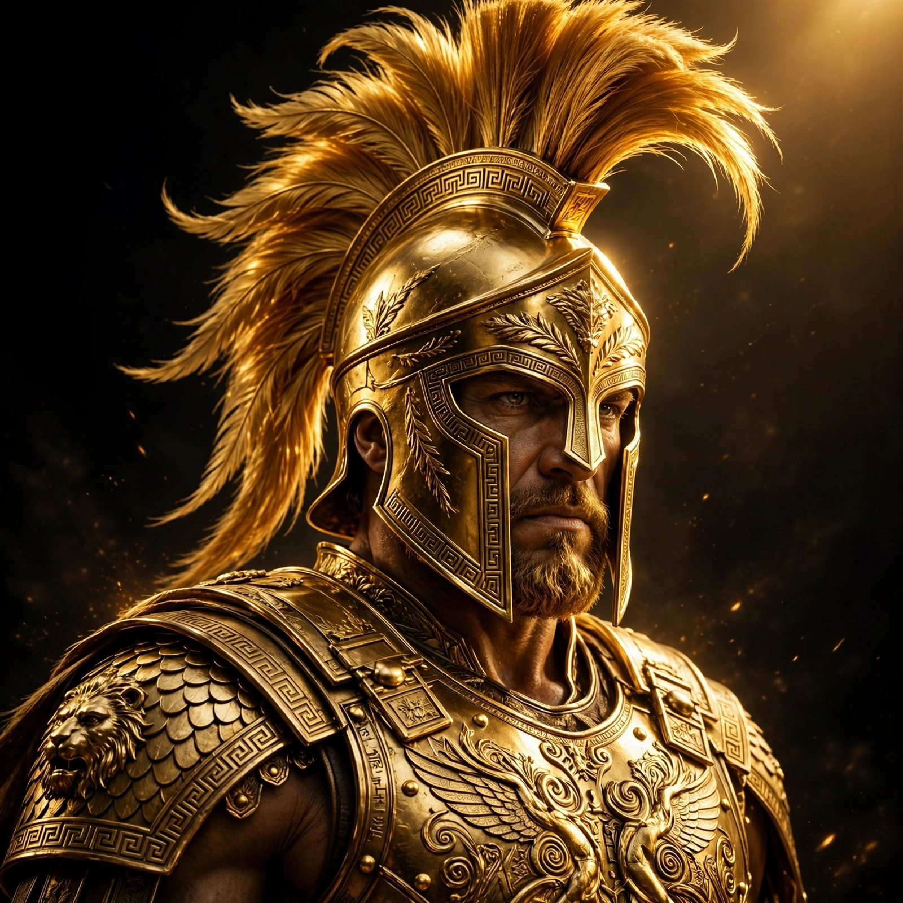
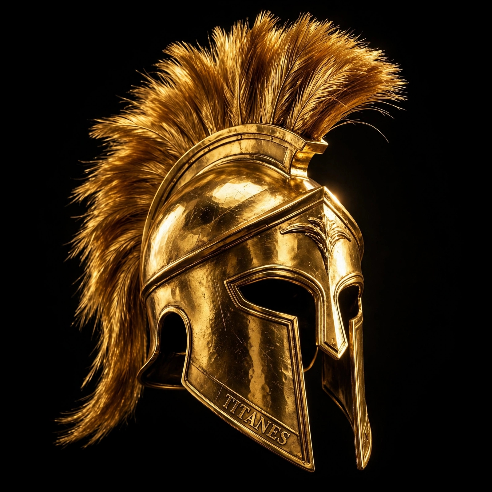
Otras marcas: Nike con "Just Do It", Adidas con "Impossible is Nothing". TITANES con "Del Lodo al Oro". Misma estrategia: vender historia, no producto.
ETAPA 4: 2025-2026 - MARCA PROFESIONAL - TITÁN ACTUAL
Hoy 2026 soy programador web profesional. Mi marca tiene universo completo: index.html principal, escolaridad.html, tramites.html, mi-experiencia-profesional.html 48 renglones, sobre-mi.html con gustos completos, administracion-tiempo.html versión 8.5 perra, mi-vida-integra.html, mi-pasado-escolar.html. Todas conectadas como universo Marvel, no páginas sueltas. Uso GitHub Pages, Netlify, Vercel gratis. Mi código es limpio, rápido, mobile first. Mi logo actual es casco espartano dorado con sombra y letras TITANES en negritas. Mi web genera 15-25 visitas diarias orgánicas sin pagar ads. Mi marca ya está en trámite IMPI y alta SAT. Soy profesional web aunque no tenga título universitario.

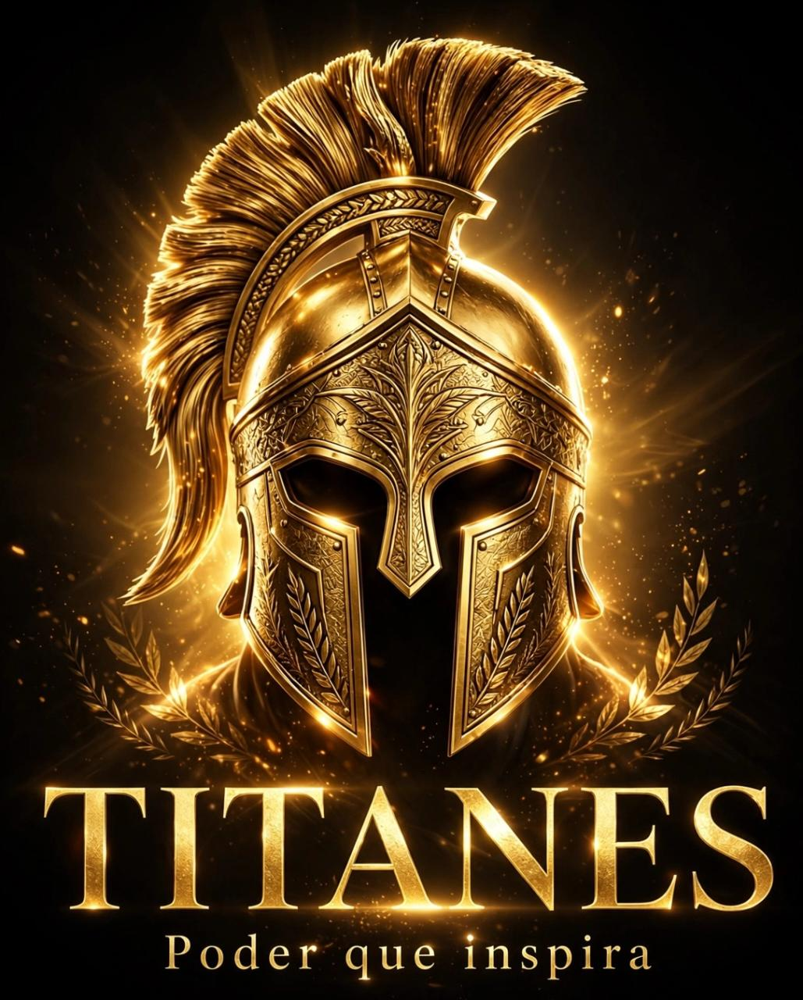
ETAPA 5: COMPARATIVA CON OTRAS MARCAS GRANDES - MI EVOLUCIÓN VS SU EVOLUCIÓN
| MARCA | INICIO LODO | EVOLUCIÓN LOGO | AHORA ORO | TITANES |
|---|---|---|---|---|
| NIKE | Venta en cajuela 1964 | De palomita simple a palomita con historia | Billones | Libreta $10 a tienda web 50 páginas |
| ADIDAS | Zapatero en Alemania | 3 rayas a trébol a 3 rayas modernas | Billones | Botón chueco a botón blanco borde oro |
| APPLE | Garage con manzanas | Manzana arcoiris a manzana minimalista | Trillones | HTML copiado a código limpio mobile first |
| TITANES | Libreta Bic 2019 sin celular | Casco mal dibujado a casco dorado pro | 24 playeras = Cancún 2027 | DEL LODO AL ORO REAL |
Análisis profesional: Todas las marcas grandes empezaron en lodo como yo. La diferencia es que ellas tuvieron dinero después. Yo sigo en lodo pero con mentalidad de oro. Mi evolución es más rápida porque en 5 años hice lo que Nike hizo en 10. Mi ventaja: soy programador web, no necesito pagar diseñador, yo hago todo desde el celular. Mi marca personal es mi mayor activo, no mi ropa.
MI IMAGEN DE PERFIL PROFESIONAL - EL PROGRAMADOR WEB TITÁN
Mi imagen de perfil es negro y dorado porque representa mi vida: negro lodo de donde vengo, dorado oro que forjé. No uso foto con traje porque no soy godín, soy guerrero programador. Mi perfil profesional es: programador web desde celular, fundador TITANES, alumno destacado 9.6 sin título pero con tienda que trabaja 24h, especialista en HTML/CSS mobile first, creador de método Titán 40-30-20-10, 50 páginas webs hechas sin pagar hosting. Mi imagen no es bonita, es imponente, forjada. Esa es mi marca personal.
"MI MARCA NO EMPEZÓ EN UN GARAGE DE USA.
EMPEZÓ EN UNA LIBRETA DE $10 EN MÉXICO.
2019: IDEA EN BIC - 2026: 50 WEBS PROFESIONALES
EVOLUCIÓN TITÁN: DEL LODO AL ORO DIGITAL
SOY PROGRAMADOR WEB, NO INFLUENCER.
MI CÓDIGO ES MI ORO, MI HISTORIA ES MI LOGO.
TITANES - EVOLUCIÓN MÁS RÁPIDA QUE NIKE"
EMPEZÓ EN UNA LIBRETA DE $10 EN MÉXICO.
2019: IDEA EN BIC - 2026: 50 WEBS PROFESIONALES
EVOLUCIÓN TITÁN: DEL LODO AL ORO DIGITAL
SOY PROGRAMADOR WEB, NO INFLUENCER.
MI CÓDIGO ES MI ORO, MI HISTORIA ES MI LOGO.
TITANES - EVOLUCIÓN MÁS RÁPIDA QUE NIKE"
Evolución de marca personal TITANES 2019-2026 - Con galería real de 24 imágenes - Programador Web Profesional
Comparativa con Nike, Adidas, Apple - De libreta a marca en trámite IMPI
© 2026 TITANES - Forjado en código limpio